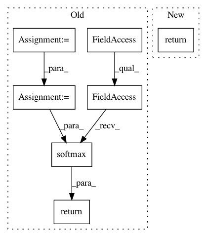

509453992838a524f6442d4e0f07a034390ae1f7,layers/eight_mile/pytorch/layers.py,LuongDotProductAttention,_attention,#LuongDotProductAttention#Any#Any#Any#,1024
Before Change
super().__init__(hsz)
def _attention(self, query_t, keys_bth, keys_mask):
a = keys_bth @ query_t.unsqueeze(2)
a = a.squeeze(2).masked_fill(keys_mask == MASK_FALSE, -1e9)
a = F.softmax(a, dim=-1)
return a
class ScaledDotProductAttention(VectorSequenceAttention):
def __init__(self, hsz):
After Change
super().__init__(hsz)
def _attention(self, query_t, keys_bth, keys_mask):
return dot_product_attention_weights(query_t, keys_bth, keys_mask)
class ScaledDotProductAttention(VectorSequenceAttention):
def __init__(self, hsz):
In pattern: SUPERPATTERN
Frequency: 3
Non-data size: 7
Instances
Project Name: dpressel/mead-baseline
Commit Name: 509453992838a524f6442d4e0f07a034390ae1f7
Time: 2020-02-13
Author: dpressel@gmail.com
File Name: layers/eight_mile/pytorch/layers.py
Class Name: LuongDotProductAttention
Method Name: _attention
Project Name: keras-team/keras
Commit Name: 4c3495896e77a5a4ebfeff717feb3d04681d27e7
Time: 2015-06-23
Author: xavier@whirlscape.com
File Name: keras/activations.py
Class Name:
Method Name: time_distributed_softmax
Project Name: hunkim/PyTorchZeroToAll
Commit Name: 55b880469ced115de9949d5d25ff835dabbb2caa
Time: 2017-11-08
Author: hunkim@gmail.com
File Name: seq2seq_models.py
Class Name: Attn
Method Name: forward